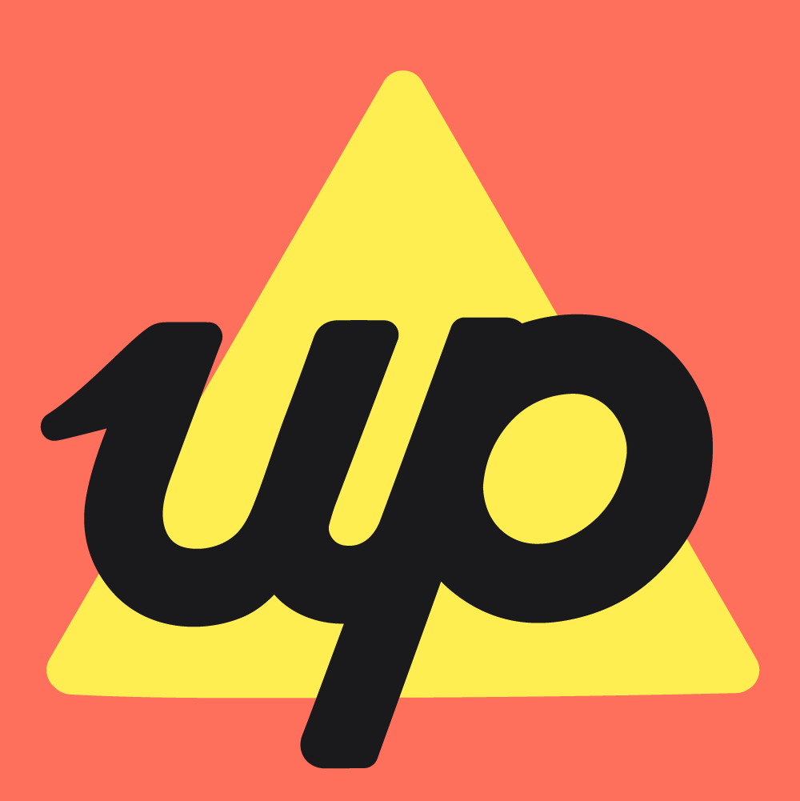

Connect Claude to your Up Bank account. Get real insights — balances, spending breakdowns, beautiful charts — all from your own device.
Real questions. Real answers from your own account.
Here you go — you're putting 67% of your income straight into savings across 8 buckets before you even think about spending. Your crush will be impressed. 😄
This month: $623 across 18 visits
Same period last year: $341 across 11 visits
That's up 83% year-on-year. Either you got a lot more social, discovered better restaurants, or both. The data isn't judging — but I am, a little. 🍝
All Up Bank API requests are made locally from your Mac or PC using your Up Personal Access Token to authenticate. Your Personal Access Token is stored in your OS keychain — not with Anthropic or Claude.
⚠️ Data Privacy Note
However, to answer your questions, your banking data (balances, transactions, etc.) is sent to your AI provider. Review Anthropic's privacy policy before use. For maximum privacy, connect a locally running model like Ollama — your data never leaves your machine. ⚠️ Read the full data privacy information →
Don't have Claude Desktop? Download it free from Anthropic →
Open the link below while logged into Up. Click Create personal access token, give it a name like "Claude", and copy it — you'll only see it once.
api.up.com.au/getting_started →
Download the file below, then install it using either method:
Option A — Double-click the .mcpb file and follow the prompts.
Option B — Open Claude Desktop → Settings → Extensions → drag the .mcpb file into the window.
Claude Desktop will show an "Up Bank API Token" field. Paste your token from Step 1 and click Install.
Your token is saved to your OS keychain — Claude Desktop will never ask for it again.
Fully quit Claude Desktop and reopen it. The Up Bank tools will be active in your next conversation.
Quit and reopen Claude Desktop. If it persists, check the server is enabled under Settings → Extensions.
Your token may have expired. Visit api.up.com.au to create a new one, then reinstall the bundle.
Uninstall from Claude Desktop Settings, then drag in the .mcpb file again to re-enter your token.
Information in this section is based on Anthropic's help article "Is my data used for model training?" as at 10 May 2026. Anthropic's policies may change — check the source for the latest.
This MCP server runs locally on your machine and is only queried by Claude when you send a prompt and Claude determines it needs to retrieve data from the Up Bank API to answer your question. Whatever data is retrieved and returned will be loaded into Claude's context window — the same place your conversation lives.
If you are currently comfortable putting your bank's entire transaction history into Claude in the form of exported spreadsheets or bank statement PDFs, this tool is essentially doing the same thing — just automated and on-demand.
Use the information below to decide if this tool is right for you.
When Claude calls a tool (e.g. list_transactions), the results — account names, balances, merchant names, amounts, dates — are transmitted to Anthropic's servers for processing. This is governed by Anthropic's privacy policy.
According to Anthropic, raw content from MCP servers is excluded from training data — unless it is directly copied into the chat itself. However, any banking data that Claude summarises or quotes in its responses becomes part of the conversation and may be used for training if you have model improvement enabled in your account settings.
Recommended: disable model improvement for Claude, or use Incognito Mode for sensitive conversations. See below.
In Claude, go to Settings → Privacy → Model Improvement and turn it off. This prevents your conversations from being used to train Claude. This applies to all your conversations, not just this tool.
Claude's Incognito Mode ensures that conversation is never used to improve Claude, even if model improvement is enabled globally in your settings. Use Incognito Mode for any conversation where you're asking about your finances. In Claude Desktop, start a new Incognito chat from the conversation menu.
A broad question like "how's my spending looking?" could cause Claude to fetch hundreds of transactions across multiple accounts. If this concerns you, ask specific, narrow questions and review the tool calls Claude makes before it answers (shown in the UI as expandable steps).
If you want zero data to leave your device, connect this MCP server to a locally running model via Ollama. Your token, your banking data, and your conversation all stay entirely on your machine. This requires a capable local model and some technical setup.